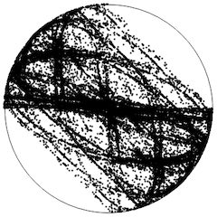

O objetivo principal deste curso é o estudo de alguns tópicos recentes de teoria ergódica sobre leis limites (i.e. o princípio de grandes desvios e o teorema do limite central) para alguns tipos de sistemas dinâmicos. A ferramenta principal neste estudo é a existência do hiato espectral do operador de transição de Markov ou do operador de transferência de Ruelle em um espaço apropriado de observáveis.

Pré-requisitos
Introdução aos Sistemas Dinâmicos; Teoria Ergódica; Análise Funcional; Teoria da Probabilidade I.
Professor
Nome: Silvius Klein
Sala: L749
Email: silviusk [arroba] puc-rio [ponto] br
Aulas
Hora: segundas e quartas das 17 às 19
Sala: L454
O curso será ministrado em inglês.
Algumas notas de aula aula serão distribuídas ao longo do semestre.
Bibliografia
[BouLa] Philippe Bougerol, Jean Lacroix, Products of random matrices with applications to Schrödinger operators, Birkhäuser 1985.
[CDK] Ao Cai, Pedro Duarte, Silvius Klein, Statistical properties for mixing Markov processes with applications to dynamical systems, preprint 2022.
[DeKiLiv] Mark Demers, Niloofar Kiamari, Carlangelo Liverani, Transfer operators in hyperbolic dynamics: an introduction, Colóquio Brasileiro de Matemática, Publicações Matemáticas do IMPA, 2021.
[DK-CBM] Pedro Duarte, Silvius Klein, Continuity of the Lyapunov exponents of linear cocycles, 31º Colóquio Brasileiro de Matemática, Publicações Matemáticas do IMPA, 2017.
[DKP] Pedro Duarte, Silvius Klein, Mauricio Poletti, Hölder continuity of the Lyapunov exponents of linear cocycles over hyperbolic maps, preprint 2021.
Avaliação
Seminários sobre tópicos do curso escolhidos pelo professor.
Tópicos principais do curso:
- Leis limites para processos aleatórios aditivos
- Sistemas dinâmicos estocásticos [DKP]
- Convergência das séries de Fourier: revisão de noções elementares de espaços vetoriais e produto interno; convergência no sentido quadrático-médio. Convergência pontual; um resultado local e um exemplo de função contínua com série de Fourier divergente.
- A transformada de Fourier na reta: definição da transformada de Fourier no espaço de funções de decrescimento moderado; o espaço de Schwartz; a fórmula de inversão de Fourier; o teorema de Plancherel; a fórmula de somabilidade de Poisson; o princípio da incerteza de Heisenberg; aplicações em EDP.